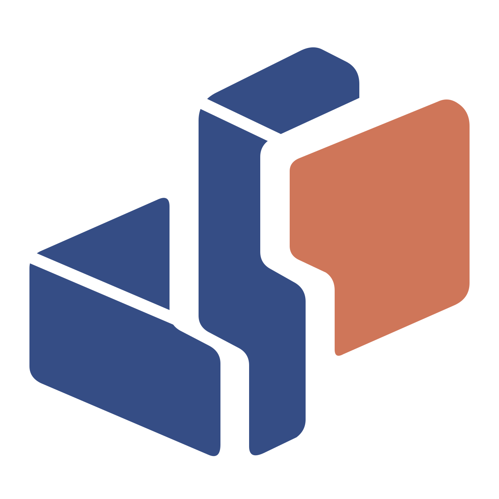

现行（10-23）
左块和中脊都是一整块深蓝，只靠轮廓暗示立体，看不出哪里是顶面。
保留现行图标，外轮廓、缝宽和颜色都不动，只把左块本来就有的顶面画出来。左块是一个盒子：左上那一角是顶面，下面是正面，顶面右半边被中脊挡住。中脊的顶盖同理。
2026-10-31 选定乙，已换成应用源码中的图标；页面里的“现行”仍是调整前的 10-23 版。
baseline/dovun-mark.svg（2026-10-23 版）原样读取三片轮廓，只加顶面或窄缝，外轮廓与现行一致。#5671ad，等于光从上方来。窄缝宽 30，约为现有缝宽的 40%。node docs/design/dovun/icon-redesign/generate-round-02.mjs（Node 22）。大图是不带底板的标记。
左块和中脊都是一整块深蓝，只靠轮廓暗示立体，看不出哪里是顶面。
只改左块。顶面用浅一级的蓝，一眼能看出是个盒子。
注意左块立体了，中脊还是平的，两块深蓝的画法不一致。
不加颜色，用一道窄缝把左块的顶面和正面分开。
选定只用原有两种颜色，单色和反白版与彩色版一致。
注意顶面变成一块单独的三角；16px 下窄缝看不见。
中脊的顶盖也提亮，两块深蓝都是光从上方来，珊瑚色卡片保持平的，仍是视觉焦点。
好处立体最完整，轮廓不变，单色时退成窄缝也成立。

两块都用窄缝，整体只用一种深蓝。
注意三片变成五片，中脊顶盖像单独浮着的一块，小尺寸最碎。
临时测试包经 macOS 26.4 渲染（NSWorkspace），测试包生成后已删除并注销。上为浅色桌面，下为深色桌面。
左边两栏是不带底板的标记，按 16、24、32、48px 显示（Retina 屏上浏览器按 2 倍渲染）。右边是图标文件里实际的 16px 与 32px 位图，放大 4 倍，即非 Retina 屏上的样子。
侧栏品牌区（39×43，含收起后的窄栏）、工作助手卡片（46×51）、助手欢迎页（58×64）。浅色与深色并排。
只有一种颜色时，提亮的变体（甲、丙）自动改用窄缝，所以甲与乙、丙与丁在这里相同。